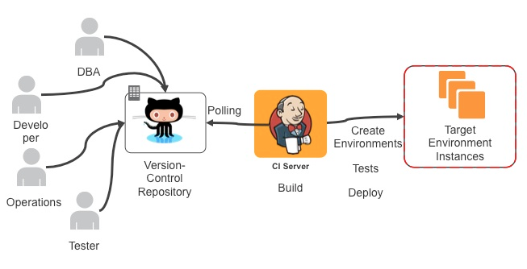
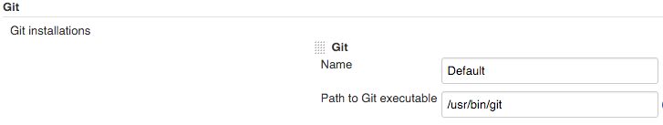
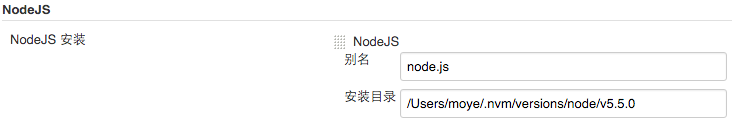
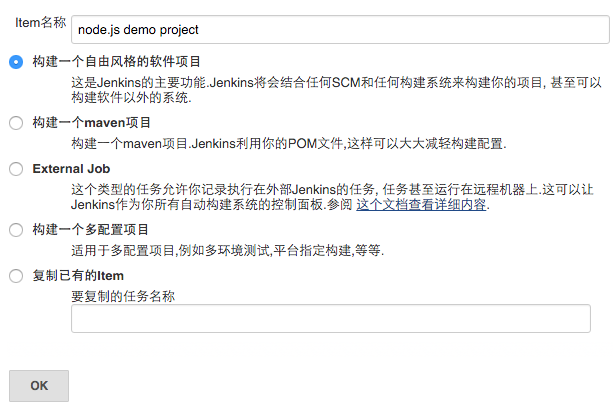
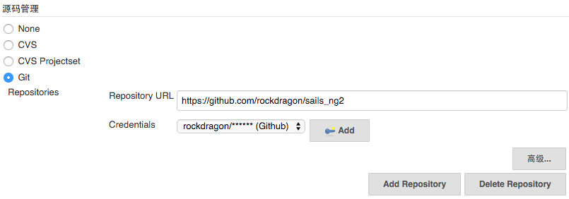
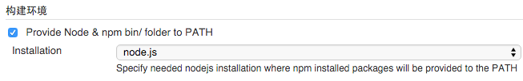
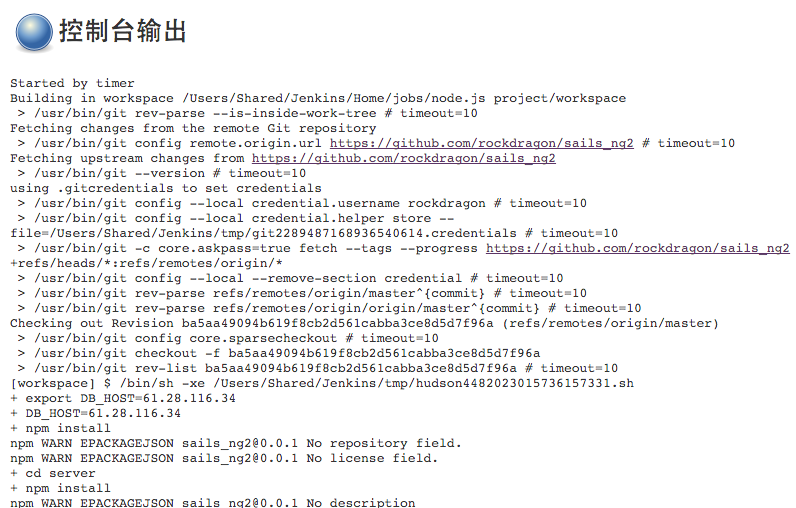
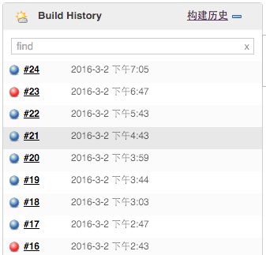

Node.js项目的持续集成
Node.js Java 持续集成 2016-03-04 09:35:01 发布
您的评价:
0.0
收藏 0收藏
来自： http://www.moye.me/2016/03/03/nodejs_ci_by_jenkins/
引子
持续集成 （ Continuous Integration ，简称CI）是一种软件工程实践：项目需要经常性的集成（每天发生若干次）成员的工作成果。这个集成的动作五花八门，可能涉及但不限于：
运行测试
编译/构建
打包/发布版本
每一次集成都会有一个结果，成或者败：
成 -> 将得到一个可用的成果
败 -> 反映出项目中的问题，解决这个问题将成为项目中优先级最高的任务
CI的价值可谓不言而喻。

Jenkins CI
Jenkins 是一个开源项目，提供了一种易于使用的持续集成系统，使开发者从繁杂的集成中解脱出来，专注于更为重要的业务逻辑实现上。同时 Jenkins 能实施监控集成中存在的错误，提供详细的日志文件和提醒功能，还能用图表的形式形象地展示项目构建的趋势和稳定性。下面将介绍 Jenkins 的基本功能及如何结合到Node.js项目。
安装Jenkins
Jenkins 的安装非常简单，只需在官网下载最新的 .war 文件，以命令行方式运行：
Shell
java -jar jenkins.war --httpPort=8080
java -jarjenkins.war --httpPort=8080
Jenkins 将运行在 http://localhost:8080 ，我们可以在浏览器上进行各种可视化的管理。在集成我们的源码项目之前，先做一些准备设置：
安装Nodejs和Git插件
1.沿菜单路径进行选择：
系统管理 -> 管理插件 -> 可选插件
2.选取 NodeJS Plugin 和 Github Authentication plugin ，点 【直接安装】。
3.安装完成后，进入：
系统管理 -> 系统设置
4.设置 Git 路径信息：

5.设置 Nodejs 路径信息：

集成Github上的Node.js项目
1. 新建一个自由风格的软件项目：

2. 配置Git仓库，并提供帐号信息，以便Jenkins以自动抓取源码版本：

3.配置构建环境，将Nodejs环境变量导入到Jenkins运行时

4.配置构建时执行的Shell脚本
可以看到，这一步就是【构建】的实质所在：
导出程序用的环境变量
包的安装
执行测试
此外，还可以为项目配置触发器，诸如：cron定时执行/做为其他项目构建的后续动作等。当然，不配也可以，直接点击【立即构建】，然后进入此次构建的详情页，通过Console Output 项查看构建的实时输出：

任何时候，项目都会显示最近一次的构建状态，并且提供详细的构建历史：

小结
本文仅是简单介绍了持续集成的概念，以及如何快速构建Jenkis + Nodejs + Github 的持续集成环境。但Jenkins 的功能远不至文中所述的这些，Jenkins 还有详尽的日志处理和持续集成构建状等功能。抛砖引玉，愿能与大家一起继续探索。
参考：http://www.open-open.com/lib/view/open1457055148171.html